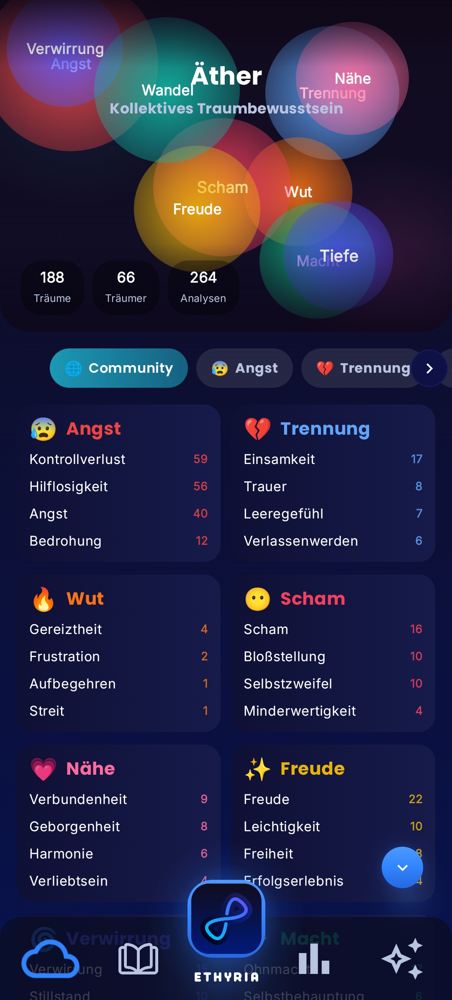
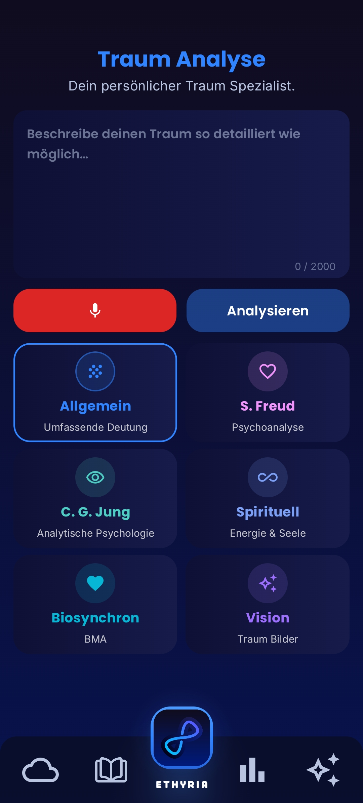
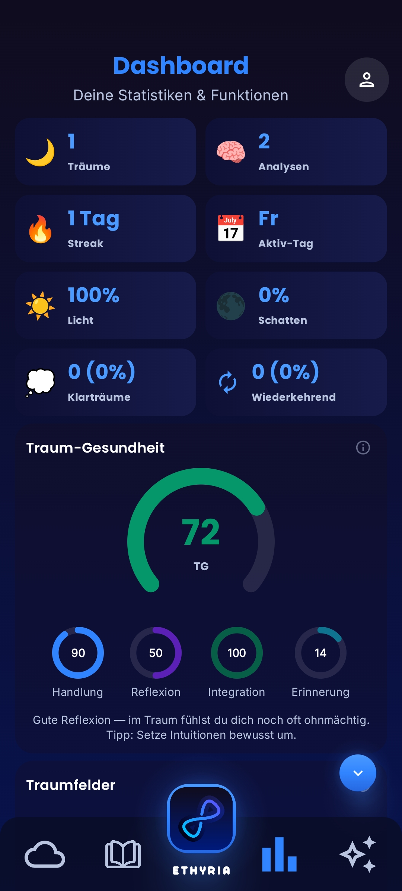

Jetzt in der Beta · Limitierter Zugang
Träume lügen
nicht.

Äther
Analyse
Statistik 5 Perspektiven · Freud & Jung
KI-Traumbilder
Lokal & verschlüsselt
Zugang sichern ▸
Kostenlos
Kein Abo
Kein Tracking
 Ethyria
Ethyria
Android
ethyria.at